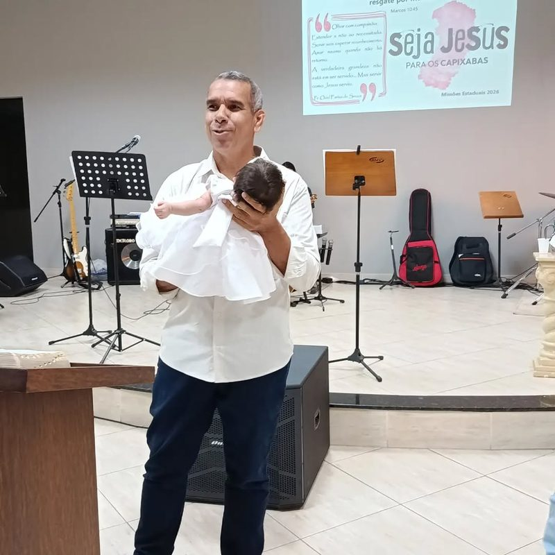
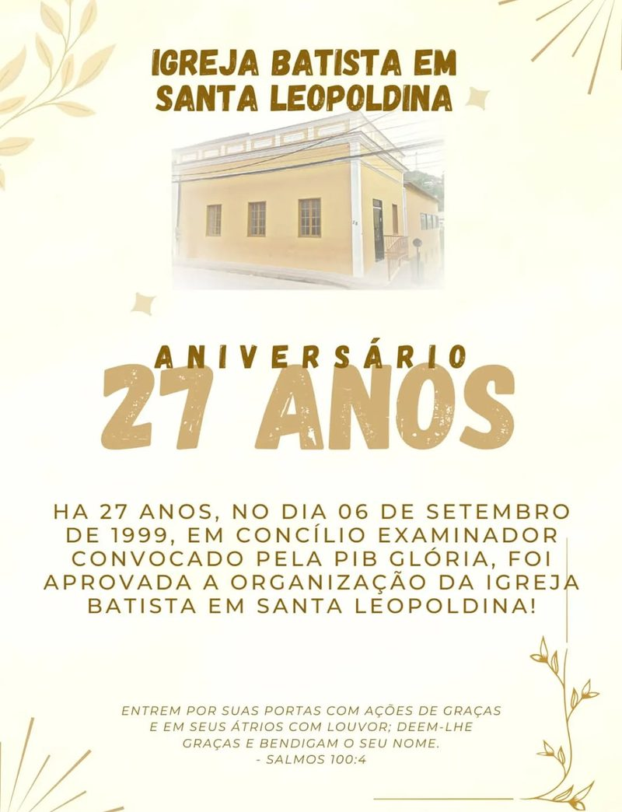
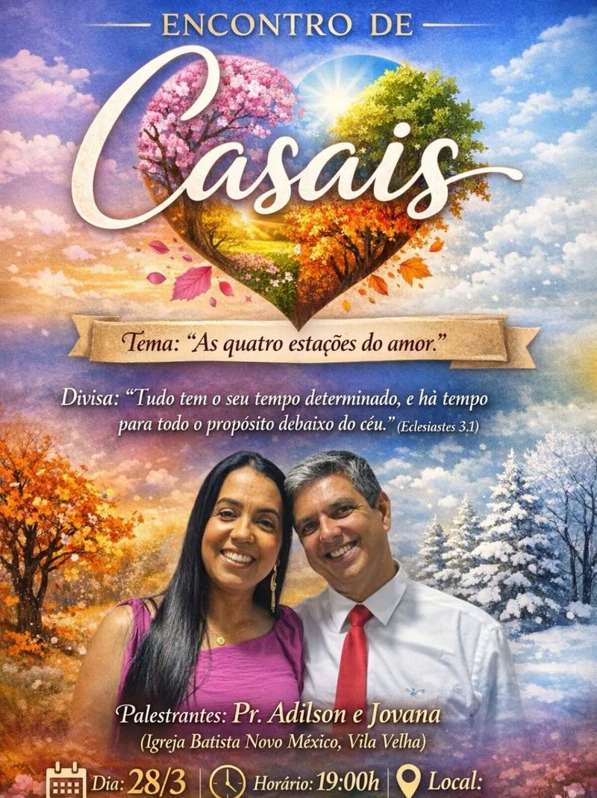
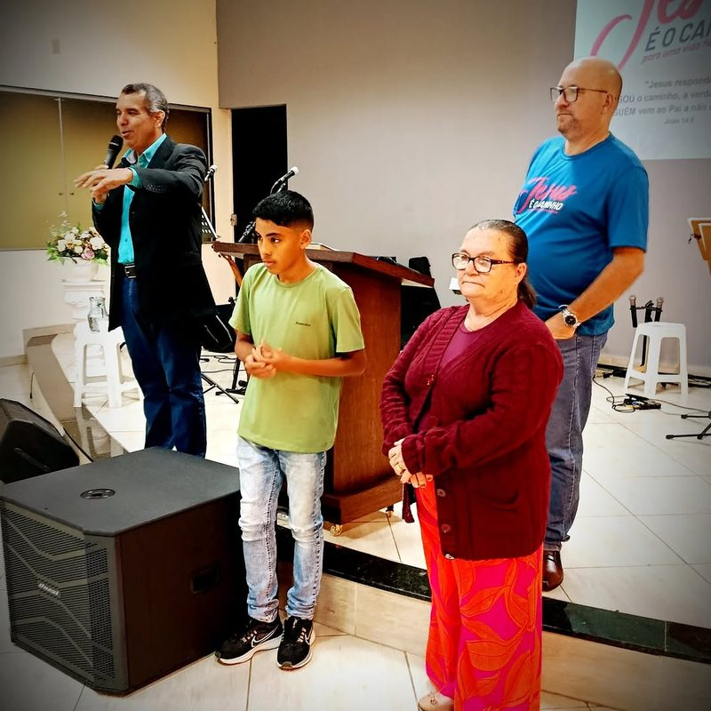
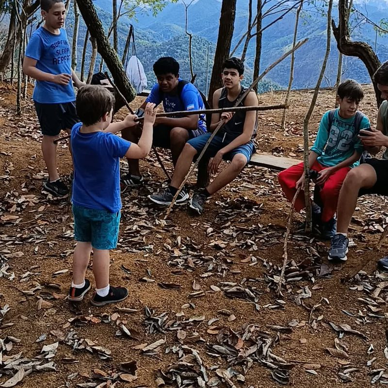
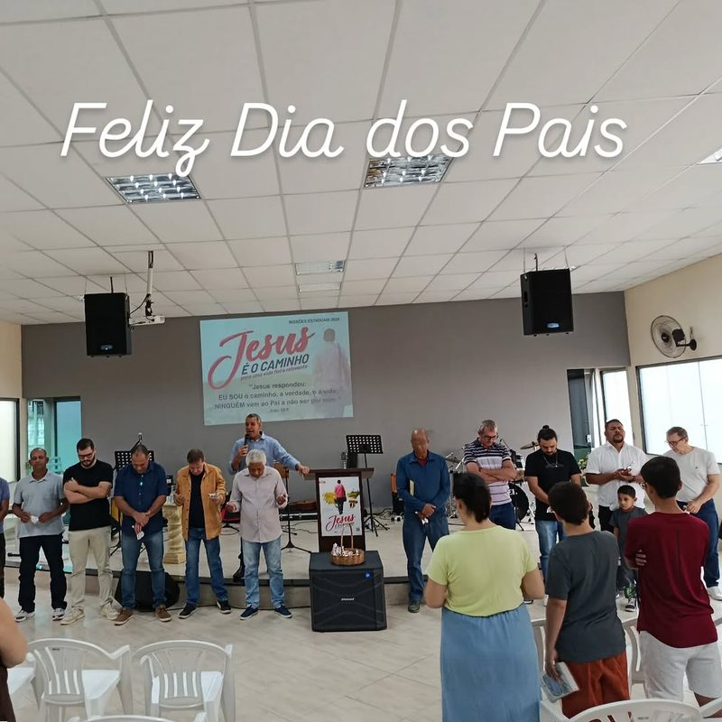

A Igreja Batista em Santa Leopoldina celebra a Palavra e acolhe quem chega da cidade ou da zona rural.

Os convites e datas que a igreja publicou no Instagram.


Encontros, fé e comunhão — fotos da própria igreja.



Envie para a comunicação. Com autorização de quem aparece, elas entram aqui.
Falar com a comunicação →Envie seu pedido de oração. O conteúdo não é publicado no site.
Enviar pedido de oração →